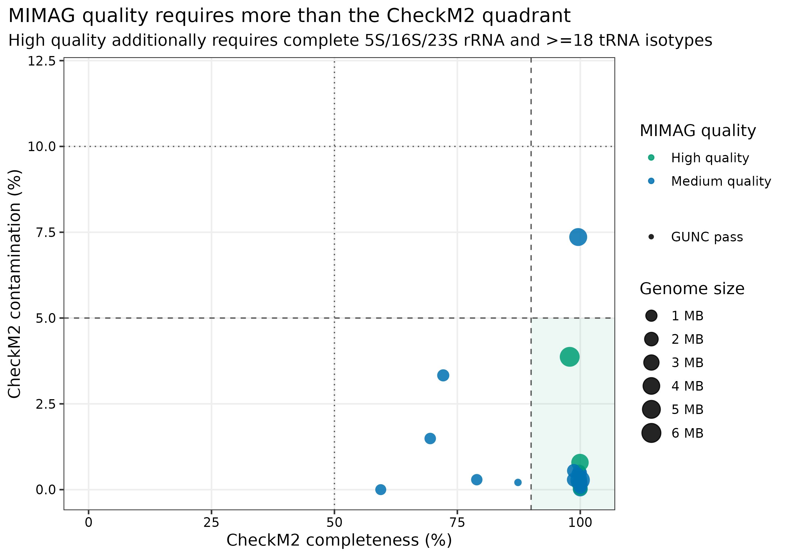
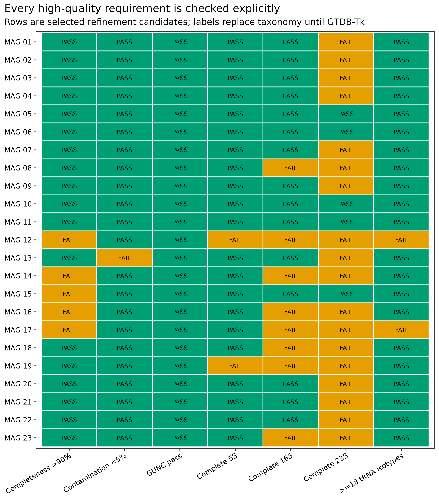
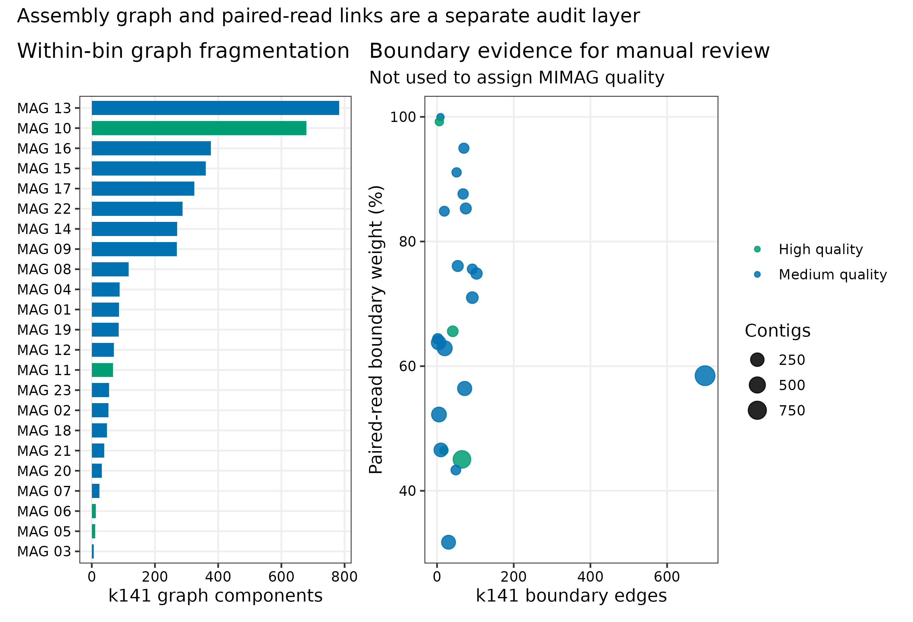
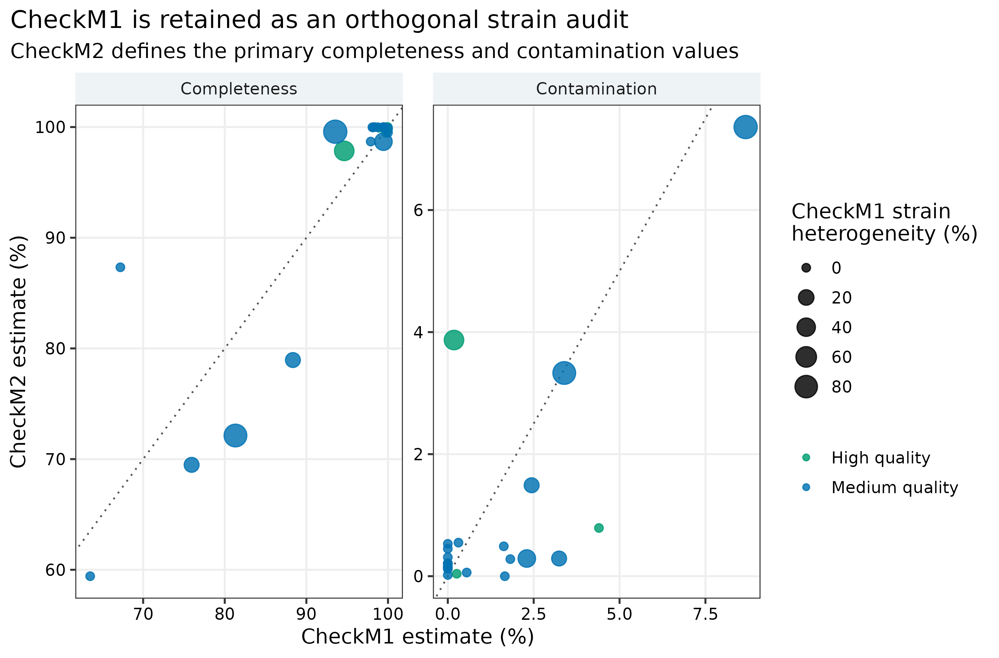

options(timeout = 600)
base_url <- "https://raw.githubusercontent.com/petemeng/metagenomics-best-practices/e219a2cd01609cc208a89e291cbd363ed7f2fbd8/"
files <- read.delim(paste0(base_url, "examples/44/files.tsv"))
for (i in seq_len(nrow(files))) {
path <- files$path[i]
dir.create(dirname(path), recursive = TRUE, showWarnings = FALSE)
if (!file.exists(path)) {
download.file(paste0(base_url, files$source[i]), path, mode = "wb")
}
}MAG 质控：CheckM2、GUNC、完整 MIMAG 与 assembly graph
先给结论：
completeness >90% + contamination <5%只到达 high-quality 的前门，不等于完整 MIMAG。对 truth-blind 精炼得到的非重叠 candidates，独立重跑 CheckM2 1.1.0、GUNC 1.1.0、CheckM1 1.2.5、barrnap 1.10.5、tRNAscan-SE 2.0.13 与 Prodigal 2.6.3。High-quality 还必须有完整 5S/16S/23S rRNA 和 >=18 个 tRNA isotypes；assembly graph 与 paired-read boundary links 作为人工复核层，既不参与 MIMAG 分级，也不能单独证明 circular genome。taxonomy 需用锁定 release 的 GTDB-Tk 独立完成，不能用 mock truth 冒充分类结果。
重要算力与数据边界
本次用 24 CPU cores；建议 128 GB RAM、200 GB 磁盘，预计耗时 3–8 小时。CheckM2 v3 DIAMOND 文件为 3,082,500,605 bytes；GUNC ProGenomes 2.1 下载归档约 7.19 GB、解压库更大；CheckM1 pplacer 应只给 1 thread 以限制内存。barrnap/tRNAscan-SE 很快，但每个 MAG 都保留 GFF、table 和日志。没有服务器时，可读取 data/small/44-mag-qc-mimag-graph-frozen/ 的完整 MIMAG table、graph audit、raw QC tables、feature evidence、资源日志和环境锁。
提示先确定这一点
CheckM2、GUNC 与 rRNA/tRNA 证据回答不同问题；完整 MIMAG 分级不能简化成完整度和污染两个阈值。
完整度超过 90%，为什么还不一定是高质量 MAG？
锚定图是 genome-resolved 论文常见的 MAG quality landscape：x 轴 CheckM2 completeness，y 轴 contamination，颜色为 MIMAG tier，形状为 GUNC status。CheckM2 提供快速 genome-quality estimates (Chklovski 等 2023年)，GUNC 捕捉 lineage-inconsistent chimerism (Orakov 等 2021年)，最终等级遵循 MIMAG minimum information 标准 (Bowers 等 2017年)。
与只画 >90/<5 quadrant 的版本相比，本篇增加 explicit requirement matrix：每个 candidate 的 CheckM2、GUNC、5S/16S/23S 和 tRNA isotypes 都能逐项追踪。

23 个 candidates 全部通过 GUNC，其中 17 个先通过 CheckM2 >90%/<5% 前门；但只有 5 个含完整 5S/16S/23S rRNA set，21 个达到至少 18 个 tRNA isotypes。完整 MIMAG 规则最终得到 4 个 high-quality、19 个 medium-quality、0 个 low/failed，也就是 17 个 pre-marker HQ 中有 13 个不能直接写成 high-quality。CheckM marker lineage 进一步把它们分为 16 个 Bacteria 与 7 个 Archaea，结构注释均使用相应 domain mode。
下载本例数据与分析代码
数据与代码清单列出了本例的输入表、分析脚本和环境文件（约 17.2 MiB）。本清单不含原始 FASTQ 或大型数据库；是否需要它们取决于下文的分析起点。清单中的已计算结果仅供核对；读取结果表不等于重新运行统计模型或上游工具。
在新建文件夹中运行下面的 R 代码，下载完成后即可按正文中的相对路径读取文件。需要核验文件版本时，可使用带完整性检查的下载脚本。
先确认系统环境与版本来源
输入 lineage 与数据库
| 输入 | 锁定对象 | 角色 |
|---|---|---|
43-bin-refinement-frozen selected membership |
PRJEB52977 / ERR9765746 / ERR9765747 共组装 | truth-blind final candidates |
| CheckM2 DB | version 3；Zenodo 14897628；DMND 3,082,500,605 bytes；SHA-256 1b86ef3e...a63ae46f |
primary completeness/contamination |
| GUNC DB | ProGenomes 2.1；DMND 13,520,342,381 bytes；MD5 447c9330...fe4af4eb |
chimerism |
| CheckM1 data | release 2015-01-16；Zenodo 7401545；.dmanifest 留档 |
lineage/strain heterogeneity supplement |
| MEGAHIT graph source | v1.2.9 k141.contigs.fa |
FASTG adjacency |
| JGI paired links | 41-read-mapping-depth-frozen/raw/paired-contigs.tsv |
read-pair boundary audit |
Known mock references只在 mag-quality-truth-audit.tsv 做 post-hoc recovery/purity，不参与 MIMAG 公式、domain mode 或 graph flag。
环境配置与完整运行说明
mamba create -n metagenome-assembly-2026.07 --file env/assembly-linux-64.lock
mamba create -n metagenome-mag-qc-2026.07 --file env/mag-qc-linux-64.lock
mamba create -n metagenome-gunc-2026.07 --file env/gunc-linux-64.lock
mamba create -n metagenome-checkm1-2026.07 --file env/checkm1-linux-64.lock
export DB_ROOT=/db/metagenome-mag-qc
export DB_MANIFEST=data/small/44-mag-qc-database-manifest.tsv
db/download_db.sh audit
db/download_db.sh download checkm2-v3
db/download_db.sh download gunc-progenomes2.1
db/download_db.sh download checkm1-2015-01-16
mkdir -p "${DB_ROOT}/checkm2-v3" \
"${DB_ROOT}/gunc-progenomes2.1" \
"${DB_ROOT}/checkm1-2015-01-16"
tar -xzf "${DB_ROOT}/archives/checkm2-v3/checkm2_database.tar.gz" \
-C "${DB_ROOT}/checkm2-v3"
gzip -cd "${DB_ROOT}/archives/gunc-progenomes2.1/gunc_db_progenomes2.1.dmnd.gz" \
> "${DB_ROOT}/gunc-progenomes2.1/gunc_db_progenomes2.1.dmnd"
tar -xzf "${DB_ROOT}/archives/checkm1-2015-01-16/checkm_data_2015_01_16.tar.gz" \
-C "${DB_ROOT}/checkm1-2015-01-16"
sha256sum "${DB_ROOT}/checkm2-v3/CheckM2_database/uniref100.KO.1.dmnd"
md5sum "${DB_ROOT}/gunc-progenomes2.1/gunc_db_progenomes2.1.dmnd"
"$HOME/miniconda3/envs/metagenome-checkm1-2026.07/bin/checkm" data setRoot \
"${DB_ROOT}/checkm1-2015-01-16"install.packages(c("ggplot2", "dplyr", "readr", "tidyr", "forcats", "scales", "patchwork"))
library(ggplot2); library(dplyr); library(readr); library(tidyr); library(scales)
set.seed(20260744)
pal_pub <- c("High quality" = "#009E73", "Medium quality" = "#0072B2",
"Low/failed" = "#D55E00", "Pass" = "#009E73", "Fail" = "#E69F00")
scale_color_pub <- function(...) scale_color_manual(values = pal_pub, ...)
scale_fill_pub <- function(...) scale_fill_manual(values = pal_pub, ...)
theme_pub <- function(base_size = 12) {
theme_bw(base_size = base_size) + theme(
panel.grid.minor = element_blank(),
panel.grid.major = element_line(color = "#EEEEEE"),
axis.text = element_text(color = "black"), legend.key = element_blank(),
strip.background = element_rect(fill = "#EEF3F5", color = NA),
plot.title.position = "plot"
)
}
save_pub <- function(plot, file_base, width = 190, height = 125,
units = "mm", dpi = 350) {
dir.create(dirname(file_base), recursive = TRUE, showWarnings = FALSE)
ggsave(paste0(file_base, ".pdf"), plot, width = width, height = height,
units = units, device = cairo_pdf)
ggsave(paste0(file_base, ".png"), plot, width = width, height = height,
units = units, dpi = dpi, bg = "white")
ggsave(paste0(file_base, ".tiff"), plot, width = width, height = height,
units = units, dpi = dpi, compression = "lzw", bg = "white")
invisible(plot)
}确认待评估的 MAG 与输入版本
ROOT="$PWD"
WORK="work/article44"
FROZEN43="data/small/43-bin-refinement-frozen"
ASSEMBLY_ENV="$HOME/miniconda3/envs/metagenome-assembly-2026.07"
MAG_QC_ENV="$HOME/miniconda3/envs/metagenome-mag-qc-2026.07"
GUNC_ENV="$HOME/miniconda3/envs/metagenome-gunc-2026.07"
CHECKM1_ENV="$HOME/miniconda3/envs/metagenome-checkm1-2026.07"
CHECKM2_DB="/db/metagenome-mag-qc/checkm2-v3/CheckM2_database/uniref100.KO.1.dmnd"
GUNC_DB="/db/metagenome-mag-qc/gunc-progenomes2.1/gunc_db_progenomes2.1.dmnd"
python3 scripts/prepare_article44_mag_qc.py \
--project-root "${ROOT}" --work-dir "${WORK}" \
--article43-frozen "${FROZEN43}" --assembly-env "${ASSEMBLY_ENV}" \
--mag-qc-env "${MAG_QC_ENV}" --gunc-env "${GUNC_ENV}" \
--checkm1-env "${CHECKM1_ENV}" --checkm2-db "${CHECKM2_DB}" \
--gunc-db "${GUNC_DB}"每个重建 FASTA 必须与固化 selected table 的 RefinedSHA256 一致，selected bins 之间不能共享 contig。
独立重跑 CheckM2 与 GUNC
CheckM2：标记与机器学习意义上的 completeness/contamination
CheckM2 使用 protein annotation 与模型预测 genome completeness 和 contamination (Chklovski 等 2023年)。它适合统一筛选大量 bins，却不能保证所有 contigs 来自同一 lineage，也不能证明 chromosome closed。
GUNC：gene lineage 是否在一个 genome 内自洽
GUNC 根据 genome 内 genes 的 taxonomic assignment distribution 计算 clade separation 与 contamination signal (Orakov 等 2021年)。一个 CheckM2 contamination 较低的 bin 仍可能 pass.GUNC=FALSE；这种 candidate 不进入 MIMAG high/medium set。
checkm2 predict --input work/article44/bins \
--output-directory work/article44/qc/checkm2 --extension .fna \
--threads 24 --database_path "${CHECKM2_DB}" --remove_intermediates
gunc run --input_dir work/article44/bins --file_suffix .fna \
--db_file "${GUNC_DB}" --threads 24 \
--out_dir work/article44/qc/gunc --contig_taxonomy_output独立重跑可以发现 flatten/reconstruction 的任何漂移，也让 raw table、command 和 checksum 形成闭合证据链。
从单一 contamination 升级为 marker redundancy + lineage chimerism
CheckM2 contamination 与 GUNC CSS 不同维度。主过滤要求两者都通过，并保留 pass.GUNC 与 clade separation score。GUNC fail 不应用“CheckM2 contamination 很低”覆盖。
从 mock taxonomy 升级为独立 GTDB-Tk
已知输入 genome accession 仅验证 recovery/purity。正式 taxonomy 必须用锁定 release 的 GTDB-Tk 独立分类；结果表明确写 Pending independent GTDB-Tk classification，避免 data leakage。
注意只跑 CheckM2，不跑 GUNC
marker redundancy 可能漏掉 lineage-inconsistent non-marker contigs。至少并列报告 CheckM2 与 GUNC。
注意用 known mock accession 充当正式 taxonomy
这是 benchmark truth，不是 blind classification。taxonomy 保持 pending，等 GTDB-Tk 独立运行。
CheckM1 lineage 与 strain heterogeneity
checkm lineage_wf -x fna -t 24 --pplacer_threads 1 --aai_strain 0.9 \
--tab_table -f work/article44/qc/checkm1-qa.tsv \
work/article44/bins work/article44/qc/checkm1CheckM1 1.2.5 使用 2015-01-16 reference data，仅作 supplementary audit。Methods 中不能把它的 completeness 与 CheckM2 值混成一个阈值。
注意CheckM1/CheckM2 挑更好看的值
本篇预注册 CheckM2 为 primary，CheckM1 只作 lineage/strain audit。Methods 必须写清数据库 release 与角色。
按 marker lineage 运行 rRNA/tRNA/CDS
barrnap + tRNAscan-SE：MIMAG high-quality 的结构要求
MIMAG high-quality draft 要求 >90% completeness、<5% contamination、23S/16S/5S rRNA 和至少 18 个 tRNA species/isotypes (Bowers 等 2017年)。本篇只把 barrnap 的完整 hits 计入 rRNA；tRNAscan-SE 的 pseudogene、undetermined 与 suppressor 类别不计入 18-isotype threshold。
CheckM1：marker lineage 与 strain heterogeneity 的补充检查
CheckM1 与 CheckM2 的 completeness/contamination 算法不同，不能混合择优。本篇用 CheckM2 作为 primary quality，CheckM1 只提供 marker lineage、对比值与 strain heterogeneity。marker lineage 需用同一 CheckM 数据库的 taxon_marker_sets.tsv 回溯到 Bacteria/Archaea，随后决定 barrnap/tRNAscan mode；不能把所有不含字面量 Archaea 的 lineage 都当细菌，也不能从已知 mock label 倒推。
# bacterial lineage 示例；archaeal lineage 改为 barrnap --kingdom arc / tRNAscan-SE -A
barrnap --kingdom bac --threads 8 --addids MAG.fna > MAG.barrnap.gff
tRNAscan-SE -B --thread 8 --output MAG.trnascan.tsv \
--stats MAG.trnascan.stats --gff MAG.trnascan.gff --forceow --quiet MAG.fna
prodigal -i MAG.fna -p meta -f gff -o MAG.prodigal.gff -a MAG.proteins.faa完整 rRNA hit 要同时通过 barrnap 完整性检查；tRNA 以非 pseudo、非 undetermined、非 suppressor 的 unique isotypes 计数。
从简化 >90/<5 升级为完整 MIMAG
早期研究常把 >90/<5 写作 high-quality。按 MIMAG，缺任一完整 5S/16S/23S 或少于 18 个 tRNA isotypes 时，即使 CheckM2 quadrant 合格，也不能升级为 high quality (Bowers 等 2017年)。结果表应保留 PreMarkerHQ 和最终 MIMAGQuality 两列。
注意把 >90/<5 直接标为 MIMAG high-quality
还要完整 5S/16S/23S 和 >=18 tRNA isotypes；否则只能报告 medium quality 或 pre-marker HQ。
注意把 partial rRNA 当完整 hit
barrnap 的 truncated/aligned-only hit 不能满足 MIMAG complete rRNA set；保留 GFF attributes 供复核。
注意用 tRNA gene 总数代替 isotype 数
同一 isotype 多拷贝不能补齐缺失 amino-acid coverage；pseudo/undetermined/suppressor 也不计入 18。
注意只按 lineage 字符串是否含 Archaea 选择 mode
古菌 lineage 可能显示为 p__Euryarchaeota 或 c__Thermoprotei。应由 CheckM taxon_marker_sets.tsv 回溯 domain，并逐 MAG 留存 qc-domain-audit.tsv；否则会误跑 bacterial barrnap/tRNAscan mode。
转换 MEGAHIT graph 并汇总 paired links
Assembly graph：连接证据，不是质量等级
MEGAHIT k141.contigs.fa 转为 FASTG 后，可统计一个 MAG 内部 edges、boundary edges 与 connected components；固化的 paired-contigs.tsv 提供独立 read-pair link weight。boundary link 可能来自 repeat、strain variation、plasmid 或错误合并，只能标记人工审查。即便 graph 形成 cycle，也不能在没有 closure/read support 的情况下写成 complete circular genome。
megahit_toolkit contig2fastg 141 \
data/raw/article30/work/assemblies/megahit-coassembly/intermediate_contigs/k141.contigs.fa \
> work/article44/graph/megahit-k141.fastgcontig2fastg 会把原始 k141_* 名称改写成 NODE_*，不能直接按字符串相交。汇总器以 forward sequence SHA-256 将 58,070 个 FASTG nodes 精确映回 k141.contigs.fa，固化 assembly-graph-node-map.tsv.gz 后才把 edges 限制到每个 MAG membership，统计 internal/boundary edges 与 components；再把 paired-contigs.tsv 的 index 映射回 checksum-locked assembly order，计算内部与 boundary link weight。
从“有 assembly graph”升级为可解释的 boundary ledger
graph edge 和 paired-read link 分开记录。一个 fragmented MAG 可能只是 assembly 不连续；boundary links 也可能是 conserved repeat。两者用于挑选 Bandage/IGV 人工审查对象，不自动删除或合并 contigs。
注意看见 graph cycle 就声称 circular complete
assembly graph orientation、repeat、coverage 与跨接 reads 都需人工核验；本篇对所有 candidates 明确不作 circular claim。
注意直接拿 FASTG 的 NODE 名称与 k141 contig 名称相交
megahit_toolkit contig2fastg 会重命名节点；字符串相交会得到 0 个 present nodes 和 0 条 edges，却不一定报错。应以 exact sequence hash 建立并冻结 node map，再要求每个 selected contig 都能回到同一 graph 坐标。
运行封装流程并生成完整表
python3 scripts/run_article44_mag_qc.py \
--project-root "${ROOT}" --work-dir "${WORK}" \
--assembly-env "${ASSEMBLY_ENV}" --mag-qc-env "${MAG_QC_ENV}" \
--gunc-env "${GUNC_ENV}" --checkm1-env "${CHECKM1_ENV}" \
--checkm2-db "${CHECKM2_DB}" --gunc-db "${GUNC_DB}" --threads 24
python3 scripts/summarize_article44_mag_qc.py \
--project-root "${ROOT}" --work-dir "${WORK}" \
--article43-frozen "${FROZEN43}"MIMAG 分类公式是：
qc <- readr::read_tsv("data/small/44-mag-qc-mimag-graph-frozen/mag-quality-summary.tsv",
show_col_types = FALSE)
qc <- qc |>
dplyr::mutate(recomputed = dplyr::case_when(
CheckM2Completeness > 90 & CheckM2Contamination < 5 & GUNCPass &
Complete5S & Complete16S & Complete23S & TRNAIsotypes >= 18 ~ "High quality",
CheckM2Completeness >= 50 & CheckM2Contamination < 10 & GUNCPass ~ "Medium quality",
TRUE ~ "Low/failed"
))
stopifnot(all(qc$recomputed == qc$MIMAGQuality))
汇总质量结果并检查图表
python3 scripts/freeze_article44_mag_qc.py \
--project-root "${ROOT}" --work-dir "${WORK}" \
--output-dir data/small/44-mag-qc-mimag-graph-frozen
Rscript scripts/plot_article44_mag_qc.R \
--input-dir data/small/44-mag-qc-mimag-graph-frozen --output-dir figures
python3 scripts/validate_article44_mag_qc.py \
--project-root "${ROOT}" --frozen-dir data/small/44-mag-qc-mimag-graph-frozen \
--output-dir results/44-mag-qc-mimag-graph --figure-dir figures \
--chapter chapters/44-mag-qc-checkm2-gunc-mimag.qmd
58,070 个 FASTG nodes 全部得到唯一 exact-sequence 映射，共解析 5,843 条无向 edges；23 个 MAG 的成员节点均完整落在 k141 坐标中。每个 MAG 有 2–699 条 k141 boundary edges、6–783 个 graph components，paired-read boundary weight 为 31.75%–99.96%；因此 23 个均保留为 Fragmented in k141 graph，这些数值只决定人工复核优先级。

CheckM1 与 CheckM2 completeness 的最大绝对差为 20.12 percentage points，contamination 的最大绝对差为 3.69 points；6 个 MAG 的 CheckM1 strain heterogeneity 大于 0，最高 88.89%。73 条已计时命令合计 5,638.86 秒；CheckM2、GUNC、CheckM1 分别耗时 513.63、1,204.70、1,681.26 秒，整条链的实测峰值为 CheckM1 pplacer 阶段的 34.787 GiB。
从单点质量升级为 uncertainty/sensitivity
投稿前应报告 CheckM2 model used、CheckM1 discrepancy、GUNC fail、strain heterogeneity、rRNA partial hits、tRNA isotype count、graph components 和 boundary links。对阈值附近 MAG 可用 BUSCO/lineage-specific markers、read coverage 与 manual curation 增加证据。
逐项报告 MAG 的质量证据
Methods template
Non-overlapping MAG candidates selected without access to known truth from a MEGAHIT v1.2.9 co-assembly of PRJEB52977 runs ERR9765746 and ERR9765747 were reconstructed from checksum-locked contig memberships. Completeness and contamination were estimated independently with CheckM2 v1.1.0 and database version 3 (Zenodo 14897628; DIAMOND SHA-256
1b86ef3eac0813c1853f53182c17657045e3763d66f384ec95747261a63ae46f). Chimerism was assessed with GUNC v1.1.0 and ProGenomes 2.1;pass.GUNC=FALSEgenomes were excluded from high- and medium-quality sets. CheckM v1.2.5 with reference data release 2015-01-16 was used only for marker-lineage and strain-heterogeneity auditing; each marker lineage was mapped through the release-matchedtaxon_marker_sets.tsvhierarchy to choose bacterial or archaeal annotation mode. Complete 5S, 16S, and 23S rRNAs were annotated with barrnap v1.10.5, and tRNAs were annotated with tRNAscan-SE v2.0.13 using that audited marker domain; pseudogene, undetermined, and suppressor calls were excluded from isotype counts. Following MIMAG, high-quality MAGs required CheckM2 completeness >90%, contamination <5%, GUNC pass, all three complete rRNAs, and >=18 tRNA isotypes; medium-quality MAGs required completeness >=50%, contamination <10%, and GUNC pass. Coding density was calculated from Prodigal v2.6.3 metagenomic predictions. MEGAHIT k141 FASTG nodes were mapped back to the original k141 contigs by exact forward-sequence SHA-256 before adjacency was summarized; FASTG adjacency and JGI paired-contig links were retained separately as manual-review evidence and were not used to assign MIMAG quality or claim circularity. Commands, databases, resources, raw features, node mappings, and SHA-256 checksums were retained.
Results template
All 23 selected candidates passed GUNC, and 17 met the pre-marker CheckM2 >90% completeness and <5% contamination gate. Only five candidates contained complete 5S, 16S, and 23S rRNAs, whereas 21 contained at least 18 valid tRNA isotypes; the complete MIMAG rule therefore assigned four high-quality and 19 medium-quality MAGs. CheckM marker lineages supported bacterial mode for 16 candidates and archaeal mode for seven. Exact sequence hashes mapped all 58,070 FASTG nodes back to the k141 contig coordinate set and identified 5,843 undirected graph edges; graph components and paired-read boundary evidence were reported without altering MIMAG tiers or supporting circularity claims. Known mock references were used only in a separate post-hoc recovery/purity table, and taxonomy remained pending independent GTDB-Tk classification.
换到自己的研究中，先检查哪些条件？
- 输入一套 non-overlapping candidate membership 和对应 FASTA checksums；不从手工改过但无记录的 bins 起步。
- 锁 CheckM2 tool/database、GUNC tool/database 与 CheckM1 data release；保存 archive 和 installed-file hashes。
- 独立运行 CheckM2+GUNC，先应用 >=50/<10+GUNC 的 minimum gate。
- 用 marker lineage 选择 bacterial/archaeal barrnap 与 tRNAscan mode；保留 raw GFF/table。
- 明确按 complete 5S/16S/23S 与 unique valid tRNA isotypes 分类，不使用 gene count shortcut。
- 同时报告 CheckM1 strain heterogeneity 与 CheckM2/CheckM1 discrepancy，阈值附近 genome 做人工复核。
- 从 assembler 原始 graph 与 read mappings 计算 internal/boundary evidence；不要用 graph 自动宣称 circularity。
- taxonomy 单独跑 GTDB-Tk；MIMAG、taxonomy、dereplication 和 abundance 各保留独立字段与版本。
图中应该保留哪些信息？
- completeness/contamination 图同时画 50/10 与 90/5 参考线；颜色为最终 MIMAG，形状为 GUNC。
- requirement matrix 每格写 PASS/FAIL，列顺序固定为 CheckM2、GUNC、rRNAs、tRNA。
- candidate 显示用
MAG 01等匿名 ASCII label；GTDB 未完成前不把 mock organism 写成 taxonomy。 - graph 图把 components 与 boundary evidence 分 panel，并在 subtitle 明确不用于 MIMAG。
- CheckM1/CheckM2 对比加
y=x，不要把两套值平均。 - 图内全英文；输出 PDF、350-dpi PNG 与 LZW TIFF。
回到最初的问题
完整度大于 90%、污染低于 5% 只到 MIMAG 高质量前门；rRNA、tRNA、嵌合、菌株异质性和 assembly graph 必须分层记录。
参考文献
- CheckM2 (Chklovski 等 2023年)
- GUNC (Orakov 等 2021年)
- CheckM (Parks 等 2015年)
- MIMAG (Bowers 等 2017年)
- 真实 uneven microbial mocks (Meslier 等 2022年)